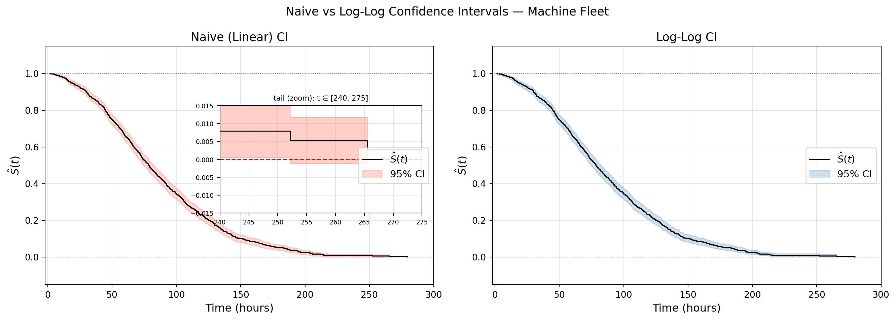

In Part 3, we derived the likelihood function for censored data from first principles, fit a Weibull distribution to our synthetic machine fleet, and assessed the quality of that fit using two diagnostic tools — the Q-Q plot, which told the story visually, and the K-S test, which put a number on it. We ended with a sobering observation: a single Weibull is not enough for a heterogeneous fleet. The K-S statistic \(D_n = 0.067\) translated into a ₹6 crore cost swing — and we couldn’t identify which machines were responsible without modeling the effect of their individual characteristics on failure time.
Before we get to regression models, we need a better estimator of the survival function itself — one that handles censored data naturally and doesn’t require us to assume any parametric form for the distribution of failure times. This is the subject of Part 4.
The Kaplan-Meier Estimator
This part introduces the OG estimator of the survival function, the Kaplan-Meier estimator, and derives it from first principles. Most survival analysis blogs introduce this estimator in the very beginning before any groundwork. But we like first principles, and this is how we will derive it. We will also prove Greenwood’s formula for the variance of the Kaplan-Meier (KM) estimator, and handle tied failure times rigorously. Finally, we will apply both to our machine fleet dataset. Let’s get started!
In survival analysis and reliability engineering, we don’t see all the failure times of the units under study. Some units may still function at the end of the study, while others may be lost to follow-up. This is known as right censoring. Note that other censoring types like left and interval censoring also exist, but we will focus on right censoring as it is the most common type in survival analysis. Can you still estimate the survival function of the population with this incomplete data? The Kaplan-Meier estimator provides a way to do just that. It is a non-parametric estimator of the survival function that can handle right-censored data.
Here is the setup. You have a non-negative random variable \(T\) representing the time until an event of interest — failure of a machine, say. You have a sample of \(n\) i.i.d. observations, but some are right-censored. Formally, you observe pairs \(\{(Y_i, \delta_i)\}\) for \(i = 1, 2, \ldots, n\), where \(Y_i = \min(T_i, C_i)\) is the observed time and \(\delta_i = \mathbf{1}\{T_i \leq C_i\}\) is the event indicator — 1 if the failure was observed, 0 if censored.
Let \(t_{(1)} < t_{(2)} < \cdots < t_{(K)}\) be the distinct failure times in the sample. For now, we assume no ties — no two units fail at exactly the same time. We will handle ties later. What we want is to estimate the survival function at any time \(t\) using only the observed failure times and a counting argument. Sit tight. This is going to be fun.
Derivation of the Kaplan-Meier Estimator
Start with the definition of the survival function:
\(S(t) = P(T > t)\) This is the probability of surviving beyond/past time t. We will break down what it means to survive past time t into a sequence of events.
To survive past time t, you must:
Survive past the first failure time \(t_{(1)}\) (if it occurs before t)
Survive past the second failure time \(t_{(2)}\) (if it occurs before t)
And so on, until you have survived past all the failure times that occur before t.
In other words, to survive past time t, you must survive past each of the failure times that occur before t. This can be expressed mathematically as:
\(S(t) = P(T > t) = P(T > t_{(1)}, T > t_{(2)}, \ldots, T > t_{(k)})\)
Let \(A_j\) be the event that you survive past the j-th failure time \(t_{(j)}\). Then we can rewrite the above expression as:
\(S(t) = P(A_1, A_2, \ldots, A_k)\)
By the chain rule of probability, we can express this joint probability as a product of conditional probabilities:
In words, the probability of surviving past time t is the product of the probability of surviving past the first failure time, times the probability of surviving past the second failure time given that you survived past the first, times the probability of surviving past the third failure time given that you survived past the first two, and so on. This is the crux of the Kaplan-Meier estimator. The estimator is essentially a product of conditional probabilities of surviving past each failure time, given that you have survived past all the previous failure times.
The big question now is: how do we estimate these conditional probabilities from our data?
Estimating the Conditional Probabilities
Notice one thing: If you survived past the j-th failure time $t_{(j)}, then you surely survived past all the previous failure times \(t_{(1)}, t_{(2)}, ..., t_{(j-1)}\). This means that the conditional probability of surviving past the j-th failure time given that you survived past all the previous failure times is just the probability of surviving past the j-th failure time given that you were at risk just before the j-th failure time. In other words, we can simplify the conditional probabilities as follows:
[Note that this is not the Markov assumption (if you know what that is). It is a logical consequence of the definition of the events \(A_j\). It is just subset-superset logic. If you survived past \(t_{(j)}\), then you must have survived past \(t_{(j-1)}\), so the two events are nested. The conditional probability of surviving past \(t_{(j)}\) given that you survived past all the previous failure times is just the conditional probability of surviving past \(t_{(j)}\) given that you survived past \(t_{(j-1)}\).]
So the probability of surviving past t_{(j)} can be written as a simplified conditional probability that only depends on the previous failure time. That is
\(S(t)= P(T > t_{(1)}) \cdot P(T > t_{(2)} | T > t_{(1)}) \cdot P(T > t_{(3)} | T > t_{(2)}) \cdots P(T > t_{(k)} | T > t_{(k-1)})\)
The survival function is a product of conditional probabilities — the probability of surviving past each failure time, given survival up to the previous one. The question is how to estimate each factor from the data.
The Risk Set
We need a definition. A machine or a unit is said to be “at risk” at time t if it has not yet failed or been censored by time t. In other words, it is still in the study and has the potential to fail in the future. Formally, the risk set at time t, denoted by R(t), is the set of all individuals who are at risk at time t. Mathematically, we can define the risk set as follows:
That is, the risk set at time t consists of those units who are still under observation at time t and have not yet experienced the event of interest (failure) or been censored. The size of the risk set just before the \(j\)-th failure time is:
Note the \(\geq\): units that fail exactly at \(t_{(j)}\) are counted as at risk just before \(t_{(j)}\). They are in the risk set, and then they leave it.
Counting Argument for Estimating the Conditional Probabilities
\(P(T > t_{(j)} | T > t_{(j-1)})\) is the probability of surviving past time \(t_{(j)}\) given that you survived past time \(t_{(j-1)}\). This is equivalent to 1 minus the probability of failing at time \(t_{(j)}\) given that you survived past time \(t_{(j-1)}\). In other words, we can write:
\(P(T > t_{(j)} | T > t_{(j-1)}) = 1 - P(T \leq t_{(j)} | T > t_{(j-1)})\)
Using the definition of conditional probability, we can express the above probability as follows:
\(P(T \leq t_{(j)} \mid T > t_{(j-1)}) = \frac{P(T \leq t_{(j)},\ T > t_{(j-1)})}{P(T > t_{(j-1)})}\) = \(\frac{P(t_{(j-1)} < T \leq t_{(j)})}{P(T > t_{(j-1)})}\)
We are working with realizations (observed data), not the continuous random variable \(T\). We know that for any continuous random variable, the probability of it taking any specific value, say \(t_0\), is zero. So, \(P(T = t_0) = 0\) for any \(t_0\). But we are working with observed data, and in our observed data, we do have some units that fail at specific times. So, we can treat the observed failure times as discrete points where the probability of failure is non-zero. This is a common approach in survival analysis when dealing with real-world data. In the data, exactly \(d_j\) units failed at the recorded failure time \(t_{(j)}\). This is not a statement about the (continuous) random variable \(T\), but rather a statement about the observed data. So the event \(\{T \leq t_{(j)},\ T > t_{(j-1)}\}\) — failure somewhere in \((t_{(j-1)},\ t_{(j)}]\) — collapses to failure exactly at \(t_{(j)}\):
\(P(T \leq t_{(j)},\ T > t_{(j-1)}) = P(T = t_{(j)})\)
Now we can estimate the numerator and denominator from the data using a counting argument.
Numerator:\(P(T = t_{(j)})\) - the probability that a randomly chosen unit fails exactly at time \(t_{j}\). In the sample of \(n\) units, \(d_j\) units failed at time \(t_{(j)}\). Thus, the failure probability at time \(t_{j}\) is simply \(\frac{d_j}{n}\).
Denominator:\(P(T > t_{(j-1)})\)- the probability that a randomly chosen unit survives past time \(t_{(j-1)}\). Since there are no failures in the open interval \((t_{(j-1)},\ t_{(j)})\), a unit that survived past \(t_{(j-1)}\) is still at risk just before \(t_{(j)}\) — and vice versa. The two conditions are equivalent. In the sample, exactly \(n_j\) units are at risk just before \(t_{(j)}\), so the probability of surviving past \(t_{(j-1)}\) is \(\frac{n_j}{n}\).
Excellent! We have an estimate for the conditional probability of surviving past each failure time. Plugging back into our expression for \(S(t)\):
The Kaplan-Meier Estimator — Final Form
Plugging the estimated conditional probabilities back into the product formula for \(S(t)\), we get: \[\hat{S}(t) = \prod_{t_{(j)} \leq t} \left(1 - \frac{d_j}{n_j}\right)\]
This is the Kaplan-Meier estimator — derived from nothing more than the definition of the survival function, the chain rule of probability, and a counting argument. No distributional assumptions, no parameters to fit. The hat on \(\hat{S}(t)\) is a reminder that this is an estimator of the true survival function, not the truth itself. The estimator was introduced by Edward Kaplan and Paul Meier in a 1958 paper in the Journal of the American Statistical Association — one of the most cited papers in all of statistics. It’s titled “Nonparametric Estimation from Incomplete Observations” — a perfect description of what we just did. Here is the link to the original paper.
Here’s some code to compute the Kaplan-Meier estimator in Python:
Median survival time : 78.5 hours
Total machines : 1000
Observed failures : 886 (88.6%)
The KM curve tells a clear story. The fleet degrades rapidly in the first 100 hours — by \(t = 78.5\) hours, half the machines have already failed. This is the median survival time: the time at which \(\hat{S}(t)\) crosses 0.5. Beyond 200 hours, the curve flattens out and our estimate of the survival function becomes more uncertain.
Notice the shaded band around the curve. This is the pointwise confidence interval for \(\hat{S}(t)\), and it is not free — it requires an estimate of the variance of \(\hat{S}(t)\). That variance estimate is Greenwood’s formula, and deriving it is exactly what we do next.
Greenwood’s Formula for the Variance of the Kaplan-Meier Estimator
Since the conditional probabilities in the product formula for \(\hat{S}(t)\) are estimated from the data, \(\hat{S}(t)\) is a random variable. Therefore it has an uncertainty associated with it, which we can quantify using its variance. Greenwood’s formula gives us a way to estimate the variance of the Kaplan-Meier estimator at any time t. We want to know how much \(\hat{S}(t)\) varies from sample to sample due to random sampling variability. This is crucial for constructing confidence intervals and performing standard hypothesis tests to quantify uncertainty in our estimates. We will derive Greenwood’s formula from first principles. The derivation uses two applications of the delta method. If that’s new to you, there’s a short detour below — it’s worth knowing. If it’s familiar, you’ll enjoy seeing it applied here.
Let’s start with the expression for the Kaplan-Meier estimator:
Question: Are the terms \(\ln (1 - \hat{p}_j)\) independent of each other? The answer is yes. Because the failure times are distinct and the \(\hat{p}_j\) are based on disjoint sets of units (the risk sets at different failure times), the \(\hat{p}_j\) are independent random variables. Therefore, the terms \(\ln (1 - \hat{p}_j)\) are also independent. For independent random variables, the variance of a sum is the sum of the variances. Thus, we can write:
Can we compute \(\text{Var}({p}_j)\)? Yes, we can. \(\hat{p}_j\) is the sample proportion of failures at time \(t_{(j)}\) among the \(n_j\) units at risk just before \(t_{(j)}\). Under the assumption of independent failures, \(\hat{p}_j\) follows a binomial distribution with parameters \(n_j\) and \(p_j\), where \(p_j\) is the true probability of failure at time \(t_{(j)}\). The variance of a binomial random variable is given by:
And replacing \(p_j\) with its estimate \(\hat{p}_j\), we get: \[\text{Var}(\hat{p}_j) = \frac{\hat{p}_j (1 - \hat{p}_j)}{n_j}\]
How do we get from \(\text{Var}(\hat{p}_j)\) to \(\text{Var}(\ln (1 - \hat{p}_j))\)? This is where the delta method comes in.
The Delta Method and its Application to Greenwood’s Formula
Let \(X_{n}\) be a sequence of random variables such that \(\sqrt{n}(X_{n} - \theta) \xrightarrow{d} N(0, \sigma^2)\) as \(n \to \infty\), where N(0, \(\sigma^2\)) is a normal distribution with mean 0 and variance \(\sigma^2\). Let \(g\) be a function that is differentiable at \(\theta\) with \(g'(\theta) \neq 0\). Then, by the delta method, we have:
This means that the variation of \(g(X_{n})\) is approximately g’(\(\theta\)) times the variation of \(X_{n}\) for large n. The delta method allows us to find the asymptotic distribution of a function of a random variable, given the asymptotic distribution of the random variable itself.
What does the \((d)\) superscript mean? This is a special type of convergence of random variables known as convergence in distribution which in simple terms says that the distribution of the random variable on the left-hand side converges to the distribution on the right-hand side as n goes to infinity. This is exactly what the Central Limit Theorem tells us about the distribution of sample means. A certain function of the sample mean converges in distribution to a normal distribution as the sample size increases. The delta method is a generalization of the Central Limit Theorem that allows us to find the asymptotic distribution of a function of a random variable, given the asymptotic distribution of the random variable itself. Is it worth going into the details of the proof of the delta method? Probably not. You can find the proof in any mathematical statistics textbook. The key idea is to use some technical theorems to show that the distribution of \(g(X_{n})\) converges to a normal distribution with mean \(g(\theta)\) and variance \((g'(\theta))^2 \sigma^2\). Do not worry if this is not clear. Go look it up!!
Now we can apply the delta method to find \(\text{Var}(\ln (1 - \hat{p}_j))\). Let \(X_{n} = \hat{p}_j\), \(\theta = p_j\), and \(g(x) = \ln(1 - x)\). Then we have: \[g'(\theta) = g'(p_j) = -\frac{1}{1 - p_j}\]
To get an estimate of \(\text{Var}(\ln (1 - \hat{p}_j))\), we replace \(p_j\) with its estimate \(\hat{p}_j\): \[\widehat{\text{Var}}(\ln (1 - \hat{p}_j)) = \frac{\hat{p}_j}{n_j (1 - \hat{p}_j)}\]
Finally, plugging this back into our expression for \(\text{Var}(\ln \hat{S}(t))\), we get:
We can simplify this expression further by noting that \(\hat{p}_j = \frac{d_j}{n_j}\) and \(1 - \hat{p}_j = 1 - \frac{d_j}{n_j} = \frac{n_j - d_j}{n_j}\). Substituting these into the formula, we get:
Do we have what we came from? Not quite. We have the variance of \(\ln \hat{S}(t)\), but we want the variance of \(\hat{S}(t)\). No problem. We can use the delta method again to find \(\text{Var}(\hat{S}(t))\) from \(\text{Var}(\ln \hat{S}(t))\). Let \(X_{n} = \ln \hat{S}(t)\), \(\theta = \ln S(t)\), and \(g(x) = e^x\). Then we have: \[g'(\theta) = g'(\ln S(t)) = e^{\ln S(t)} = S(t)\]
This is Greenwood’s formula for the variance of the Kaplan-Meier estimator. It allows us to quantify the uncertainty in our estimate of the survival function at any time t, which is crucial for constructing confidence intervals and performing hypothesis tests.
Applying Greenwood’s Formula to the Machine Fleet Dataset
import pandas as pdimport numpy as npimport matplotlib.pyplot as pltfrom lifelines import KaplanMeierFitterdf = pd.read_csv('../../data/machine_fleet.csv')kmf = KaplanMeierFitter()kmf.fit(df['observed_time'], event_observed=df['event_observed'], label='Machine Fleet')# Plotting the KM curve with confidence intervalsfig, ax = plt.subplots(figsize=(10, 5))kmf.plot_survival_function( ax=ax, ci_show=True, color='steelblue', ci_alpha=0.15)ax.set_xlabel('Time (hours)', fontsize=12)ax.set_ylabel(r'$\hat{S}(t)$', fontsize=12)ax.set_title("Kaplan-Meier Estimate with Greenwood's Confidence Bands — Machine Fleet", fontsize=13)ax.axhline(y=0.5, color='firebrick', linestyle='--', linewidth=0.8, label='Median survival')ax.legend(fontsize=11)ax.grid(True, alpha=0.3)plt.tight_layout()plt.show()# Greenwood's formula calculationset = kmf.event_tablenj = et['at_risk'].valuesdj = et['observed'].valuesmask = dj >0nj_f = nj[mask]dj_f = dj[mask]t_f = et.index[mask].values # numpy arraygreenwood_terms = dj_f / (nj_f * (nj_f - dj_f))greenwood_cumsum = np.cumsum(greenwood_terms)St_f = kmf.predict(t_f).values # numpy arraygreenwood_var = (St_f **2) * greenwood_cumsumgreenwood_se = np.sqrt(greenwood_var)ci_lower = St_f -1.96* greenwood_seci_upper = St_f +1.96* greenwood_se# --- Print table ---print(f"{'Time':>8}{'n_j':>6}{'d_j':>6}{'d/n(n-d)':>12} "f"{'S(t)':>8}{'SE':>8}{'95% CI Lower':>14}{'95% CI Upper':>14}")print("-"*82)for i inrange(min(15, len(t_f))):print(f"{t_f[i]:>8.1f}{nj_f[i]:>6.0f}{dj_f[i]:>6.0f} "f"{greenwood_terms[i]:>12.6f}{St_f[i]:>8.4f} "f"{greenwood_se[i]:>8.4f}{ci_lower[i]:>14.4f} "f"{ci_upper[i]:>14.4f}")print(f"\n(Showing first 15 failure times out of {mask.sum()} total)")
Confidence Intervals for the Kaplan-Meier Estimator
We have an estimator \(\hat{S}(t)\) and, thanks to Greenwood’s formula, we have an estimate of its variance. The square root of the variance is its standard error. A single number (like the standard error) is hard to reason about in practice. Sometimes, we need a range of the survival probability estimates. This is what a confidence interval gives us.
Recall that a \((1 - \alpha)\) confidence interval for a parameter \(\theta\) is a random interval \([L, U]\) such that:
\[P(L \leq \theta \leq U) = 1 - \alpha\]
The interval is random because \(L\) and \(U\) are computed from the data, which varies from sample to sample. The correct interpretation: if we repeated the experiment many times and computed the interval each time, \((1-\alpha)\) of those intervals would contain the true \(\theta\). In the statistics literature, \(\alpha = 0.05\) is the standard choice, giving a 95% confidence interval.
A Quick Detour: CI for a Normal Random Variable
Let \(X_1, X_2, \ldots, X_n\) be i.i.d. observations from \(N(\mu, \sigma^2)\) with \(\sigma^2\) known. The sample mean \(\bar{X} = \frac{1}{n}\sum_{i=1}^n X_i\) is an unbiased estimator of \(\mu\) with variance \(\sigma^2 / n\). Standardising:
The 95% CI for \(\mu\) is \(\left[\bar{X} - 1.96 \cdot \frac{\sigma}{\sqrt{n}},\
\bar{X} + 1.96 \cdot \frac{\sigma}{\sqrt{n}}\right]\). The structure is always the same: estimate \(\pm\)\(z\)-score \(\times\) standard error.
The Naive CI for \(\hat{S}(t)\)
By analogy, and invoking the asymptotic normality of \(\hat{S}(t)\), the naive 95% confidence interval for \(S(t)\) is:
We are 95% confident that the true survival probability at 250 hours lies between 4.1% and 15.9%. This is a useful and interpretable statement.
The Problem with the Naive CI
There is a catch. \(S(t)\) is a probability, so it must satisfy \(S(t) \in [0, 1]\) for all \(t\). The naive interval doesn’t know this. Near the tails of the curve — where \(\hat{S}(t)\) is close to 0 or 1 and the standard error is relatively large — the interval can breach these bounds. In the example above we got lucky: \([0.041, 0.159]\) stays inside \([0, 1]\). But at \(t = 300\) hours, if \(\hat{S}(300) = 0.02\) and \(\widehat{\text{SE}} = 0.015\), the naive lower bound is \(0.02 - 1.96 \times 0.015 = -0.009\). A survival probability of \(-0.9\%\) is not something the laws of probability allow, let alone something you can explain to a fleet manager.
The fix is to construct the interval on a transformed scale where \([0, 1]\) is automatically respected, and then map back. The standard choice is the log-log transformation — and that is what we derive next.
Set \(\theta = \ln(-\ln \hat{S}(t))\). The 95% CI on the log-log scale is:
\[[\theta - w,\ \theta + w]\]
where \(w = 1.96 \cdot \text{SE}[\theta]\).
Step 4: Transform back to the original scale.
Since \(g(s) = \ln(-\ln s)\) has \(g'(s) = \frac{1}{s \ln s} < 0\) for \(s \in (0,1)\), \(g\) is strictly decreasing — and so is \(g^{-1}\). Inverting a decreasing function reverses the inequalities:
\[\theta - w < \theta + w \implies g^{-1}(\theta + w) < g^{-1}(\theta - w)\]
The inverse is \(g^{-1}(z) = \exp(-\exp(z))\), so:
By definition, the lower limit L of the confidence interval is supposed to be less than the upper limit U. Does it indeed happen? Since \(\hat{S}(t) \in (0,1)\) and \(\exp(w) > \exp(-w)\), raising a number in \((0,1)\) to a larger exponent gives a smaller result, confirming \(L < U\). The 95% log-log confidence interval on the original scale is:
Violation times : [252.18 265.55]
naive_lower values : [-0.00123213 -0.00224921]

Figure 3
Naive CI boundary violations : 5 out of 859 failure times
Log-log CI boundary violations: 0
The zoomed inset tells the story. At \(t=252\) and \(t=265\), the naive CI drops below zero. The dip is tiny but mathematically meaningless. The log-log interval has zero violations, no matter how sparse the risk set gets. For most of the curve the two intervals are indistinguishable. The difference only shows up where \(\hat{S}(t)\) is close to zero and the risk set is small — exactly where the normal approximation breaks down and where getting the interval right actually matters.
Tied Failure Times in the Kaplan-Meier Estimator
So far we have assumed that no two units fail at exactly the same time — the distinct failure times \(t_{(1)} < t_{(2)} < \cdots < t_{(K)}\) are strictly ordered. In real data, this assumption is routinely violated. Machines are monitored at discrete time intervals, timestamps are rounded to the nearest hour, and sometimes two units genuinely fail simultaneously. When two or more units share the same recorded failure time, we have a tie.
Setup
At each failure time \(t_{(j)}\), define:
\(n_j\) = number of units at risk just before \(t_{(j)}\)
\(d_j\) = number of failures at \(t_{(j)}\) (now allowed to be \(> 1\))
\(c_j\) = number of censorings at \(t_{(j)}\)
The \(c_j\) censored units have \(Y_i = t_{(j)}\) and \(\delta_i = 0\). All we know about them is: they were alive at \(t_{(j)}\) and then left the study. We do not know whether they would have failed at \(t_{(j)}\) or survived past it.
The Risk Set Update Rule
After processing \(t_{(j)}\), the \(d_j\) failures and \(c_j\) censorings all leave the risk set. The risk set size at the next failure time is:
\[n_{j+1} = n_j - d_j - c_j\]
This is just conservation — units enter the interval, some leave due to failure or censoring, the rest carry forward. This update rule holds regardless of how we handle the tie at \(t_{(j)}\).
The Tie-Handling Problem
We want to estimate the conditional probability of surviving past \(t_{(j)}\):
\[1 - \frac{d_j}{n_j}\]
To compute this we need \(n_j\) — the number of machines at risk when the failures occurred. The \(d_j\) failures are unambiguous. The \(c_j\) censored units are the problem: their recorded time is also \(t_{(j)}\). Were they at risk when the failures happened, or not? We don’t know — and this is exactly the question the two conventions answer differently.
Convention A: Censorings Before Failures
Convention A assumes the \(c_j\) censored units left the study before the failures occurred at \(t_{(j)}\). They are removed from the risk set first:
Notice that \(n_{j+1} = 15\) under both conventions — the tied units all leave by \(t_{(j+1)}\) regardless. The convention only affects the estimated survival factor at \(t_{(j)}\) itself, not what comes after.
Convention A implicitly assumes the censored units would have survived past \(t_{(j)}\) — because removing them from the denominator makes the failure rate look higher than it might actually be. Convention B makes no such assumption: the censored units were present, they were at risk, and then they left. It lets them contribute to \(n_j\) — which is the honest thing to do given that we genuinely do not know their fate. This is why Convention B is the standard KM convention.
Formally, under Convention B:
\[n_j = |\{i : Y_i \geq t_{(j)}\}|\]
which includes units that fail at \(t_{(j)}\), units censored at \(t_{(j)}\), and units that survive past \(t_{(j)}\). The KM estimator under Convention B is therefore:
exactly as before — the formula is unchanged. Ties required no new machinery, only a careful convention about the order of events within a tied time point.
Does Our Fleet Have Ties?
import pandas as pddf = pd.read_csv('../../data/machine_fleet.csv')failures = df[df['event_observed'] ==1]['observed_time']tie_counts = failures.value_counts()ties = tie_counts[tie_counts >1]print(f"Total failure times : {len(failures)}")print(f"Distinct failure times : {failures.nunique()}")print(f"Tied failure times : {len(ties)}")iflen(ties) >0:print(f"\nTop 5 ties:")print(ties.head())else:print("No ties in this dataset.")
Total failure times : 886
Distinct failure times : 859
Tied failure times : 27
Top 5 ties:
observed_time
72.48 2
55.03 2
194.47 2
52.83 2
46.77 2
Name: count, dtype: int64
Even though the synthetic fleet was generated with continuous failure times, the output tells a different story. Out of 886 failures, there are 27 tied failure times. In real telemetry- where failure times are recorded at fixed intervals- ties are almost guaranteed and would be far more frequent. Convention B is what lifelines applies by default, so our earlier KM estimates already handle the ties correctly without any additional code. As a bonus: lifelines also defaults to the log-log confidence interval. The 5 boundary violations in Figure 3 came from our own manually computed naive CI — we built it from scratch deliberately to show the problem. The shaded band in Figure 1, produced by kmf.plot_survival_function(ci_show=True), was already using the log-log transformation all along.
The Log-Rank Test
We have a powerful tool- the KM estimator for estimating the survival function of a population from data. In practice, we want to compare survival curves across groups. Do machines from manufacturer A last longer than manufacturer B? Does operating environment- indoor vs harsh- affect survival. These are the questions that drive maintenance scheduling and warranty decisions.
The natural first step is to plot the KM curves for each group side by side and look. But looking is not enough. The curves will almost always differ — if only due to random sampling variability. The question is whether the observed difference is large enough to be real, or whether it could possibly have arisen by chance even if the two groups had identical survival functions.
This is a hypothesis testing problem. We want to test:
\[H_0: S_1(t) = S_2(t) = \cdots = S_k(t) \quad \text{for all } t\]\[H_1: S_i(t) \neq S_j(t) \text{ for at least one pair } i \neq j\]
against the alternative that at least one group has a different survival function. The log-rank test is the standard non-parametric test for this. It requires no distributional assumptions — no Weibull, no exponential — just the KM structure we have already built.
The Core Idea: Observed vs Expected Failures
Here is the key insight. At every failure time \(t_{(j)}\) in the data, machines from all \(k\) groups sit together in the risk set, where \(k\) is the number of environmental conditions or manufacturers or something else. Some fail, some don’t. Under \(H_0\) — all groups have the same survival function — group membership is irrelevant. A machine from manufacturer A is no more or less likely to fail at \(t_{(j)}\) than a machine from manufacturer C. The failures should be distributed across groups in proportion to their share of the risk set.
The log-rank test asks: across all failure times, do the observed failures in each group match what we would expect under \(H_0\)?
The Hypergeometric Distribution
To make this precise, we need a probability model for the failures at each \(t_{(j)}\). Here is the random experiment. Consider two groups A and B.
At failure time \(t_{(j)}\), you have \(n_j\) machines in the risk set. Think of this as a bag of \(n_j\) marbles:
\(n_{Aj}\) blue marbles — machines from group A
\(n_{Bj} = n_j - n_{Aj}\) red marbles — machines from group B
Exactly \(d_j\) machines fail at \(t_{(j)}\). Think of this as drawing \(d_j\) marbles from the bag without replacement — once a machine fails, it does not return to the risk set.
The random variable of interest is:
\[X = d_{Aj} = \text{number of failures from group A at time } t_{(j)}\]
Under \(H_0\), every machine is equally likely to fail regardless of group membership — no marble is special. So \(X\) tells us: out of \(d_j\) randomly drawn machines, how many happen to be from group A?
PMF of the Hypergeometric
We want \(P(X = x)\) — the probability that exactly \(x\) of the \(d_j\) failures come from group A.
We use the classical definition of probability:
\[P(X = x) = \frac{\text{number of favourable outcomes}}{\text{total number of outcomes}}\]
This applies here because under \(H_0\), every possible selection of \(d_j\) machines from the \(n_j\) at risk is equally likely — no machine is special.
Total outcomes: The number of ways to choose \(d_j\) machines to fail from \(n_j\) machines at risk:
\[\binom{n_j}{d_j}\]
Favourable outcomes: We want exactly \(x\) failures from group A and \(d_j - x\) failures from group B. These are independent choices:
Choose \(x\) machines from group A’s \(n_{Aj}\): \(\binom{n_{Aj}}{x}\) ways
Choose \(d_j - x\) machines from group B’s \(n_{Bj}\): \(\binom{n_{Bj}}{d_j - x}\) ways
By the multiplication principle, the number of favourable outcomes is:
The mean has a clean interpretation: if group A owns \(n_{Aj}/n_j\) fraction of the risk set, it should own the same fraction of the \(d_j\) failures under \(H_0\). The extra factor \(\frac{n_j - d_j}{n_j - 1}\) in the variance is the finite population correction — the price of sampling without replacement from a finite bag. As \(n_j \to \infty\), this factor approaches 1 and the variance converges to that of a binomial.
The Hypothesis Test
Now recall what we are trying to do. We have two groups — manufacturer A and manufacturer B — and we want to know if their survival functions are the same. We are testing:
\[H_0: S_A(t) = S_B(t) \quad \text{for all } t\]
At each failure time \(t_{(j)}\), we now have:
\(d_{Aj}\) — the observed number of failures from group A
\(e_{Aj} = d_j \cdot \frac{n_{Aj}}{n_j}\) — the expected number of failures from group A under \(H_0\)
Let’s make this concrete. Suppose at failure time \(t_{(j)} = 1000\) hours:
Machines at risk
Failures observed
Failure rate
Group A
300
20
\(20/300 = 6.7\%\)
Group B
400
10
\(10/400 = 2.5\%\)
Total
700
30
\(30/700 = 4.3\%\)
Group A’s failure rate is nearly three times group B’s. But is this a real difference or just random chance?
Under \(H_0\), both groups have the same survival function — so failures should occur in proportion to each group’s share of the risk set. Group A owns \(300/700\) of the risk set, group B owns \(400/700\). Applying this to the 30 total failures:
The discrepancies at this single failure time are:
\[d_{Aj} - e_{Aj} = 20 - 12.86 = +7.14 \qquad \text{(group A fails more than expected)}\]\[d_{Bj} - e_{Bj} = 10 - 17.14 = -7.14 \qquad \text{(group B fails less than expected)}\]
Notice they are equal and opposite — if group A has 7.14 excess failures, group B must have 7.14 fewer, since the total is fixed at 30. This is always true: \(U_A = -U_B\), which is why we only need to track one group.
This is just one failure time. The log-rank test aggregates this discrepancy across all \(K\) failure times:
where \(O_A = \sum_j d_{Aj}\) is the total observed failures from group A and \(E_A = \sum_j e_{Aj}\) is the total expected failures under \(H_0\). If \(H_0\) is true, \(U_A \approx 0\). Large \(|U_A|\) is evidence against \(H_0\). The question is: how large is large enough?
The Log-Rank Test Statistic
To answer “how large is large enough”, we need to account for the variability of \(U_A\). Since the \(d_{Aj}\) are independent across failure times — the risk sets at different failure times are disjoint, exactly as we argued for Greenwood’s formula — the variance of \(U_A\) is the sum of the variances at each failure time:
Call this \(V_A\). By the central limit theorem, for large samples \(U_A / \sqrt{V_A}\) is approximately standard normal. Squaring gives the log-rank test statistic:
which follows a \(\chi^2\) distribution with 1 degree of freedom under \(H_0\). We reject \(H_0\) at significance level \(\alpha\) if:
\[\chi^2 > \chi^2_{1,\ 1-\alpha}\]
For \(\alpha = 0.05\), the critical value is \(\chi^2_{1,\ 0.95} = 3.84\). In practice, we compute the \(p\)-value:
\[p = P(\chi^2_1 > \chi^2_{\text{observed}})\]
If \(p < 0.05\), we reject \(H_0\) and conclude that the two groups have statistically different survival functions. If \(p \geq 0.05\), we fail to reject \(H_0\) — the observed difference in KM curves is consistent with random sampling variability.
Extension to \(k\) Groups
For \(k\) groups, the same logic applies. At each failure time \(t_{(j)}\), define \(e_{gj} = d_j \cdot n_{gj}/n_j\) for each group \(g\). The discrepancy for group \(g\) is:
Note that \(\sum_{g=1}^{k} U_g = 0\) — the discrepancies sum to zero across all groups, since observed and expected totals both equal \(\sum_j
d_j\). So only \(k-1\) of the \(U_g\) are independent.
The test statistic generalises to a quadratic form. Let \(\mathbf{U} = (U_1, U_2, \ldots, U_{k-1})^T\) be the vector of discrepancies for the first \(k-1\) groups, and let \(\mathbf{V}\) be the \((k-1) \times (k-1)\) covariance matrix with entries:
Note that for \(k = 2\) this reduces exactly to the two-sample formula above.
Does manufacturer or operating environment affect survival in our fleet? The KM curves will tell the story visually — but the log-rank test will tell us whether the differences are statistically significant. We run two tests: one comparing the three manufacturers, and one comparing the three operating environments.
=======================================================
LOG-RANK TEST: Manufacturer (k=3, df=2)
=======================================================
Test statistic : 59.9543
p-value : 0.000000
Degrees of freedom: 2
Conclusion : Reject H0 at alpha=0.05
=======================================================
LOG-RANK TEST: Environment (k=3, df=2)
=======================================================
Test statistic : 55.3310
p-value : 0.000000
Degrees of freedom: 2
Conclusion : Reject H0 at alpha=0.05
=======================================================
PAIRWISE LOG-RANK: Manufacturer
=======================================================
p
A B 3.272446e-01
C 1.441062e-12
B C 8.861906e-11
=======================================================
PAIRWISE LOG-RANK: Environment
=======================================================
p
harsh indoor 4.004801e-13
outdoor 5.839594e-04
indoor outdoor 3.940472e-06
The overall test asks whether any group differs from the others. The pairwise tests then identify which specific pairs are responsible.
The plots tell a clear story.
Manufacturer (left panel): Manufacturers A and B are nearly indistinguishable — their curves run almost on top of each other for the entire duration. Manufacturer C is the outlier: its curve drops sharply in the first 50 hours and reaches zero well before A and B. If you were a fleet manager, you would already be on the phone with manufacturer C’s sales representative.
Environment (right panel): There is a clean ordering across all three environments. Indoor machines survive the longest, outdoor machines fall in the middle, and harsh environment machines degrade the fastest. Unlike the manufacturer plot, all three curves are visually separated from the very beginning — the effect of operating environment kicks in immediately, not just in the tail.
The log-rank test confirms what the eye already sees. Here is the summary
Log-Rank Test Results:
Group
Test statistic
Degrees of freedom
\(p\)-value
Conclusion
Manufacturer
59.95
2
\(< 0.001\)
Reject \(H_0\)
Environment
55.33
2
\(< 0.001\)
Reject \(H_0\)
Pairwise tests — Manufacturer:
Comparison
\(p\)-value
Significant?
A vs B
\(0.327\)
No
A vs C
\(1.4 \times 10^{-12}\)
Yes
B vs C
\(8.9 \times 10^{-11}\)
Yes
Pairwise tests — Environment:
Comparison
\(p\)-value
Significant?
Harsh vs Indoor
\(4.0 \times 10^{-13}\)
Yes
Harsh vs Outdoor
\(5.8 \times 10^{-4}\)
Yes
Indoor vs Outdoor
\(3.9 \times 10^{-6}\)
Yes
Conclusion
That was a long journey — but a rewarding one. Let’s take stock of what we built in Part 4.
We started with a simple question: can we estimate the survival function from censored data without assuming any parametric form? The answer is yes- and the tool is the OG of survival analysis estimators- the Kaplan-Meier estimator derived from nothing more than conditional probability and a counting argument.
After fitting the KM estimator, we then asked: how uncertain is this estimate which led us to Greenwood’s Formula to estimate the survival function’s variance.
We turned that variance into a confidence interval — and saw why the naive linear interval fails near the tails, and how the log-log transformation fixes it.
We handled tied failure times - real data always has them - and saw that the KM formula requires no modification but just a convention about the ordering of events.
Finally, we asked: do different groups have different survival functions? The log-rank test gave us a rigorous answer. In our fleet, both manufacturer and operating environment have statistically significant effects on survival — \(p < 0.001\) in both cases. Manufacturer C fails faster than A and B. Harsh environments degrade machines faster than indoor or outdoor conditions.
The log-rank test told us that manufacturer and environment both significantly affect survival in our fleet. But it only answers a population-level question: do these groups differ? In practice, we want to ask a more personalised question — not “do harsh environment machines fail faster on average?” but “what is the survival probability for this machine, given that it is 8 years old, running at high load, operating at 110°C, with a vibration level of 6.2?”
That is a question about a specific machine with a specific covariate vector \(\mathbf{X} = (X_1, X_2, \ldots, X_p)^T\) — age, load factor, operating temperature, vibration level, and so on. To answer it, we need a model that takes \(\mathbf{X}\) as input and outputs a survival function. That model is the Cox Proportional Hazards model, and it is the subject of Part 5.